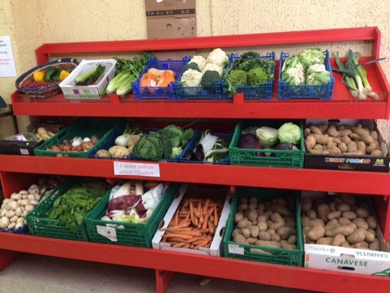

Collecter
Les bénévoles se rendent régulièrement à la banque alimentaire et chez les donateurs pour collecter les produits vendus au magasin.
L'épicerie
Un lieu ouvert, chaleureux et solidaire, où l'on choisit ses produits et où l'on avance ensemble.
L'Épicerie sociale et pédagogique est une épicerie sociale et solidaire participative. Elle permet aux habitants des communes partenaires, dont les ressources sont limitées, d'accéder à une alimentation de qualité à un tarif adapté, dans un espace ouvert, chaleureux et solidaire.
Au-delà des courses, l'équipe propose un accompagnement personnalisé et des ateliers pédagogiques, pour créer du lien et permettre à chacun d'avancer à son rythme.
Les bénévoles se rendent régulièrement à la banque alimentaire et chez les donateurs pour collecter les produits vendus au magasin.
La gestionnaire du magasin remplit et organise l'espace pour le rendre agréable et faciliter la vente.
Apporter une aide alimentaire et pédagogique, et créer du lien à travers les échanges avec les bénévoles.
Les personnes accueillies sont des « clients » : ce mot compte, il respecte et restaure leur statut de consommateur et d'acteur. Confidentialité et secret partagé sont la règle.
Chacun se sert en pensant aux personnes qui feront leurs courses après lui. La solidarité se vit entre clients, bénévoles et partenaires.
On règle ses courses à la mesure de ses moyens, on choisit ses produits, on s'engage dans un projet : chacun reste acteur de sa situation.
Repères tirés du site actuel de l'association.

Photo du magasin de l'épicerie.
Catherine Euvrard et Michel Blouin, co-présidents. Le conseil d'administration réunit les membres du bureau et des bénévoles engagés.
Sandra Tourrel, conseillère en économie sociale et familiale et coordinatrice. Ghislaine Perriolat, responsable du magasin et des approvisionnements.
Ils accompagnent les clients pendant les courses, collectent les denrées et font vivre l'épicerie au quotidien.
Information à compléter : composition exacte du bureau (présidence, trésorerie, secrétariat) à valider par l'association avant diffusion.
Un peu de temps, des denrées ou un soutien financier : chaque geste compte pour que l'alimentation de qualité reste à la portée de tous.